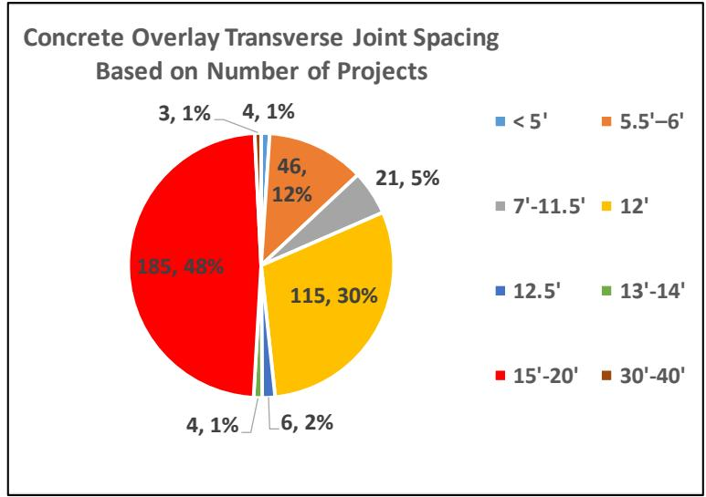

Slab Design & Geometry
Slab Design & Geometry serves as a subtopic of Structural Design & Analysis by defining specific physical parameters such as concrete overlay thickness, slab dimensions, and joint spacing to satisfy structural criteria [10]. These geometric variables are determined through mechanistic design procedures that utilize field testing and theoretical analysis to evaluate critical stresses and strains under traffic loads and temperature differentials [10], encompassing the structural principles and geometric configurations governing concrete pavement performance, focusing on stress distribution, distress prevention, and long-term serviceability. [1], [2] Key design parameters include the L/ℓ Ratio, which predicts joint activation behavior through the relationship between slab length and relative stiffness, while Joint Spacing Effects on Performance demonstrate that shorter transverse joint spacing generally enhances Pavement Condition Index and International Roughness Index outcomes. [1], [3] To mitigate longitudinal cracking and reduce edge stresses, Widened Concrete Slab configurations shift traffic loads away from critical boundaries, contrasting with standard geometries where Transverse Cracking remains a prevalent age-related distress. [1], [4] Consequently, the resulting design catalog describes these structural sections alongside other features like load transfer efficiency, ensuring the geometry meets the required stress distribution standards for long-life pavement performance [15]. Ultimately, these design strategies aim to achieve Zero-Maintenance Jointed Plain Concrete Pavement, ensuring structural adequacy without distress over extended service lives. [2]
Sources (17)
Sub-concepts (6)
Slab Geometry And Dimensions
Increasing joint spacing from 15 to 20 feet leads to cracking. [4] Internally cured concrete pavements can achieve required performance limits with a minimum thickness reduction from 8 inches to 7 inches, or from 10 inches to 9 inches, compared to conventionally cured mixes, and typically exhibit a lower coefficient of thermal expansion, higher compressive strength, and lower ultimate shrinkage, leading to improved overall distress performance over the design life. [5] In overlay applications, structural fibers allow for larger slab sizes in overlays up to 4.5 inches thick without increasing cracking rates or reducing load transfer efficiency. [3] Concrete overlays exhibit higher susceptibility to curling and warping stresses compared to full-depth pavements due to a greater surface area-to-volume ratio, which accelerates water loss and induces significant transverse distress. [6] Synthetic macro-fibers added at a dosage rate of 4 lb/yd³ do not significantly affect joint activation rates due to their low modulus of elasticity, but they effectively limit crack widths over time. [3] Fiber reinforcement can effectively prevent mid-slab transverse cracking in overlays with extended joint spacing designs up to 30 and 40 feet, whereas unreinforced sections experience widespread distress under similar conditions. [3] Ultrasonic joint activation measurements can be influenced by ambient temperature, as slabs expand in warmer conditions causing joints to close and potentially leading to false ‘no crack’ readings. [3] The geometric configuration of a joint, specifically whether it is skewed or rectangular, serves as a critical design parameter influencing the development and propagation of transverse cracks. [4] To manage these cracks, alternative transverse joint forming methods using vertical metal strips or plastic inserts can eliminate the need for time-sensitive sawing operations by inducing a plane of weakness during concrete placement; for example, joint-forming devices such as the JRI+ plastic insert are designed to create a vertical plane of weakness before paving to eliminate the need for sawing joint faults. [7] Proper curing methods also significantly impact cracking resistance in SFSCC pavements, such as using wet burlap covered with plastic sheeting for seven days, which can decrease drying shrinkage more effectively than shorter curing periods or compound applications. [8] Regarding sawing, early entry sawing typically results in delayed joint cracking compared to conventional methods, with an average initiation time of 12.3 days versus 0.6 days for joints cut to one-third pavement thickness and 2.2 days for those cut to one-quarter thickness. [9] These early-entry sawing strategies in overlays can be optimized by positioning the saw crew within sight distance of the paving operation to ensure cuts are made while the concrete is still ‘green’ to avoid delayed joint cracking. [9] Timing can be calibrated using hand or shoe tests to determine surface readiness, where crews begin sawing when the pavement surface will not scuff under a hand or shoe movement, thereby balancing early entry benefits with edge raveling prevention. [9] Furthermore, in thin overlays (2–5 inches deep), the maximum distance between joints sawed in a ‘skip’ process should be limited to five joints to prevent premature transverse cracking, whereas conventional-depth pavements may allow skipping up to ten joints depending on aggregate type. [9] Transverse joint spacing significantly influences stress distribution, with 20-foot spacings adopted in some designs to manage slab curvature changes under traffic loading. [4] In bonded concrete overlays on asphalt (BCOA), transverse joint spacing significantly influences long-term performance; 5.5- to 6-ft spacings maintain PCI values above 80 for the first decade, whereas 12-ft spacements see a rapid decline below 60 within 25 years. [3] This spacing also dictates ride quality trends, as IRI values for 20-ft spacings increase modestly to remain below 140 in/mi over 37 years, while 12-ft and 15-ft spacings reach higher thresholds of approximately 170 in/mi within 35 years. [3] In bonded concrete overlay mechanistic-empirical analysis, shorter joint spacings (e.g., 6 feet) provide better performance than longer designs (12 to 15 feet), potentially allowing for reduced overlay thickness under equivalent traffic loads, and decreasing transverse joint spacing from longer intervals (11 feet or greater) to shorter designs (5.5 to 6 feet) generally improves load transfer efficiency across the joints in concrete overlays. [3] Conversely, in unbonded concrete overlays on asphalt (UBCOA), transverse joint spacing typically ranges from 12 to 20 feet, with historical performance evaluations focusing primarily on 7-inch and 8-inch overlay thicknesses, while the AASHTOWare Pavement ME Design software supports a minimum transverse joint spacing of 10 feet as a standard design parameter for concrete overlays. [3] Other factors affecting pavement integrity include non-uniform subgrade support, which increases localized deflections and causes stress concentrations leading to premature failures such as fatigue cracking and faulting; modeling indicates that using a uniform subgrade reduces maximum principal stresses and deflections, increasing fatigue life by about 1.7 times compared to non-uniform conditions. [10] Transverse cracks in concrete patches can result from dowel lockup, where rigid dowels restrict slab movement and induce stress concentrations at the joint interface, while internal tensile stresses induced by restraints such as dowel bars and base friction are magnified under repetitive vehicle loading, directly contributing to the initiation of transverse cracking in PCC slabs. [10] Furthermore, the friction between the concrete slab and the base layer is a critical factor in initiating cracks at the joints. [10] Transverse cracking can also be initiated by a negative cantilever effect when axles are spaced approximately 10–20 feet apart, causing high top-of-slab stresses at each transverse joint. [6] In patched areas, load transfer efficiency across transverse joints typically exceeds 90%, with values ranging from 90.3% to 99%, indicating effective stress distribution despite patching. [10] Load Transfer Efficiency (LTE) at transverse joints is traditionally calculated as the ratio between the maximum deflection of the loaded slab and the deflection of the unloaded slab measured just across the joint, with poor LTE potentially accelerating punchout development in continuously reinforced concrete pavements. [10] Temperature effects significantly influence pavement stability; negative temperature differentials can induce interface shear stresses that exceed the bond strength range of 155 to 302 psi, potentially leading to interface debonding. [1] Joint spacing also influences stress distribution under temperature gradients, as wider 9 x 9 ft spacings result in larger stresses compared to shorter spacings that reduce curling. [6] Transverse curling and warping can shift from upward to downward depending on diurnal temperature changes; for example, afternoon measurements at Site 6 showed transverse relative deflections ranging from +11.6 to +22.7 mils, whereas morning conditions at Site 1 showed transverse relative deflection ranging from -15.9 to -12.4 mils, indicating significant upward curling and warping that can accelerate fatigue failures in concrete pavements. [6] Early-age pavement investigations reveal that morning transverse curling measurements can reach -23 to -13 mils, while afternoon conditions may result in a narrower range of -9 to +7 mils due to temperature fluctuations. [6] Following joint cracking, concrete slabs expand or shrink according to daily ambient temperature changes, resulting in an average length change of 0.025 inches for a 20-foot slab. [6] Strain gage measurements indicate that joint deformations at cracking range from 0.0055–0.0622 inches for early entry sawing, compared to 0.0012–0.0410 inches for one-quarter thickness conventional sawing and 0.0042–0.0458 inches for one-third thickness conventional sawing. [9] In composite pavements, doubling the crack depth along the edges of the top PCC layer increases transverse stresses in the underlying asphalt concrete (ACC) pavement by 35 percent, though thicker whitetopping overlays (4.5 inches) reduce maximum transverse stresses by up to 11.2% at the bottom PCC layer compared to thinner (3.5-inch) overlays. [1] Regarding JPCP, it is sensitive to top-down transverse cracking initiation and rapid crack propagation when loss of support and simultaneous joint loading from multi-axle truck traffic exist. [6] Mechanistic-empirical design models indicate that for thin (4-inch to 6-inch) concrete overlays, predicted International Roughness Index performance remains very similar across transverse joint spacings ranging from 12 feet to 20 feet, and the ratio of slab length to relative stiffness (L/ℓ) serves as a critical indicator for quantifying the correlation between longer joint spacing and the rate of joint activation, helping designers determine optimum spacing. [3] Transverse cracking tends to increase with Average Daily Traffic (ADT) but decreases as Annual Average Daily Truck Traffic (AADTT) increases, possibly because high-truck-volume routes are built to higher initial standards. [2] Heavy truck traffic volumes, such as those exceeding 30% on quarry routes, can cause early load failure and transverse joint faulting in thin unbonded overlays, necessitating thicker design parameters. [3] Transverse cracking is a key component in the calculation of the Pavement Condition Index (PCI), where pavements exhibiting higher PCI values demonstrate correspondingly lower levels of transverse distress. [1] In pervious concrete overlays, transverse cracking can occur approximately 2 to 3 feet from the formed joint, suggesting debonding near the joint interface rather than stress-induced failure at the joint itself. [3] These cracks can reflect existing distress from the underlying pavement; for instance, specific instances show a crack in the original slab matching a reflected crack observed in the overlay within three years of placement. [1] Furthermore, transverse cracking in pervious concrete overlays can form completely across an entire panel when large panel sizes are used to match underlying pavement dimensions, indicating potential fatigue cracking from cumulative loading. [3] Transverse joint deterioration in these overlays is primarily attributed to the mechanical cutting method used during construction, as saw-cut joints are expected to exhibit less deterioration than formed joints, and is further exacerbated by snow plow effects and construction practices that disturb fresh particles during the rolling tool insertion process. [3] In other contexts, transverse cracks are classified as reflective when they appear uniformly spaced, directly corresponding to the joint spacing of the underlying PCC layer, a distinction that helps differentiate between original transverse distress and new reflection cracking through HMA overlays. [9] Transverse cracking can be identified as a symptom of premature distress in pavements covered with asphalt overlays, where severe map cracking similar to that observed on the original concrete surface may develop. [1] Additionally, transverse cracks that are ‘tented’ upwards over underlying PCC joints indicate deteriorated concrete or reinforcement, suggesting thin overlays will likely fail. [10] Transverse cracking in concrete overlays may also result from loss of support beneath the original pavement, such as erosion caused by major flood events, leading to longitudinal and corner distress patterns. [1] Regarding jointing and panel design, smaller panel sizes, such as 4.5 x 4.5 ft., do not contribute to increased IRI values compared to larger panels like 9 x 9 ft., indicating that joint spacing can be optimized without compromising ride quality. [6] Visual distress surveys indicate that sections with no fiber reinforcement maintain a cracked slab percentage between 0.0% and 3.0%, while hot mix stress relief layers produce cracking in the 5% range for 6 ft. panels. [3] In joint-free fiber-reinforced concrete overlays, initial random transverse cracking typically emerges within the first three days after construction, eventually stabilizing with a seventh crack forming by the end of the first week. [3] Joint activation rates vary significantly with spacing intervals, with 12-foot spacings achieving nearly 100% activation while shorter 5.5- to 6-foot spacings typically range between 50% and 80%. [3] Mid-panel transverse cracking is a characteristic failure mode for slabs designed with excessively long joint spacing, such as 30-foot and 40-foot intervals, where standard mechanistic-empirical models often fail to predict the distress. [3] Field testing of joint-forming devices has shown that cracks can initiate from subsurface metal strips extending across the slab width, resulting in surface cracks that are very straight in alignment without spalling over time; however, visual surveys of transverse joints formed by alternative methods must account for potential offsets between the induced crack and the sawed joint, which can create long-term spalling problems or irregular cracks. [7] All monitored joints cracked within 25 days after paving, with approximately 80% of conventionally sawed joints cracking within two days and 100% cracking within ten days. [9] Random transverse cracking outside of designated joints can occur when joint sawing is delayed, particularly during rapid concrete setting conditions caused by high temperatures and wind; limiting premature cracking to 1% of slabs per day is a recommended threshold. [9] In extruded self-compacting concrete (SFSCC) pavements, transverse cracking can initiate from the bottom due to pavement loading when wheel paths align with crack locations, particularly in thinner slabs that are more susceptible to stress. [8] Transverse cracks in SFSCC pavements have been observed to propagate through the full thickness of the slab, with core samples revealing that some cracks start from the top while others initiate from the bottom depending on whether the cause is shrinkage or loading. [8] Specific durability issues include D-cracking, a distress characterized by fine cracks running parallel to slab joints or free edges caused by the freeze-thaw deterioration of calcareous aggregates that absorb water readily but release it slowly. [1] In Low Modulus Concrete with Very Early strength (LMC-VE) bridge deck overlays, transverse cracking is primarily attributed to high shrinkage, elevated heat of hydration, and inadequate early-age curing, typically becoming visible within seven days after placement. [5] In LMC-VE overlays, transverse cracking susceptibility increases logarithmically with higher latex-solid content due to accelerated autogenous shrinkage rates, and can be exacerbated by early traffic opening, as continued shrinkage under load is restrained by the existing bridge deck substrate. [5] Transverse cracks perpendicular to bridge abutments may result from thermal expansion/contraction resistance caused by incorrectly oriented steel H-piles in integral abutment designs, and on bridge decks, transverse cracks may appear at regular intervals of approximately 5 to 20 feet along the deck length. [5] The performance of alternative joint formation methods is evaluated based on crack formation regularity, irregularity, and long-term performance compared to traditional sawing costs, with the evaluation including measuring the savings in materials and labor costs compared to traditional joint sawing as a key efficiency metric. [7] Monitoring of transverse joint forming devices requires tracking the time of crack identification on the surface, location and path of the crack, and width of the crack at multiple locations across the pavement; furthermore, coring studies have revealed that vertical steel materials used for joint formation can be 76–89 mm in height and 3.2 mm in thickness, with cracks migrating from the top of the strip to the pavement surface. [7] Transverse cracking is a key performance metric monitored using 3D modeling systems like LiDAR to document curling and warping magnitudes that contribute to top-down and bottom-up fatigue failures, and its presence is quantified in pavement surveys as a specific percentage metric to track distress progression over time and correlate it with traffic loading. [6] In concrete overlays, transverse cracking can be monitored alongside other distress metrics like D-cracking and faulting to calculate Pavement Condition Index (PCI) values using specific state-level equations, and it is explicitly included in the IRI prediction model alongside joint faulting, spalling, and site factors to calculate performance thresholds for JPCP and concrete overlays. [1] Various technologies facilitate the detection and analysis of these features: automated crack detection systems can classify transverse cracks by orientation, length, width, and area to generate summary statistics and detailed crack maps for pavement management, while ground penetrating radar surveys can detect subsurface distress associated with transverse cracking at pavement joints even when surface symptoms are not readily evident. [9] For structural assessment, Falling Weight Deflectometer (FWD) deflection testing for transverse distress evaluation requires sensors placed between surface cracks rather than across reflective cracks to ensure accurate data, and ultrasonic pitch-catch testing using devices like MIRA can assess internal defects in concrete elements by transmitting stress-wave pulses at 35 kHz to evaluate whether contraction joints have fully activated. [3], [10] MEMS-based wireless sensor networks can be deployed to continuously monitor pavement health by measuring strain, temperature, and moisture, enabling early detection of distress mechanisms such as transverse cracking before they manifest on the surface. [11] These networks may include RFID-based passive strain sensing systems utilizing piezoelectric transducers embedded in pavement to detect fatigue damage and monitor structural health by transmitting data to vehicle-mounted readers, as well as pavement response sensors such as strain gages and LVDTs installed at critical locations like the middle of transverse joints to detect load-induced stresses. [11] Additional monitoring and analytical methods include observing transverse joint openings and faulting twice annually using nails placed 10 inches apart on each side of the joints, with faulting measured by a faultmeter at specific distances from the lane edges. [12] Photogrammetric techniques using high-resolution cameras may be utilized to assess the relative height of two slabs for joint load transfer computations, provided that image positioning parameters are known with sufficient accuracy, and the forced resonance method is commonly used to measure fundamental transverse resonant frequencies of concrete specimens for calculating dynamic Young’s Modulus of elasticity. [13] To monitor concrete strength development, maturity probes should be placed at intervals of 500 feet or closer, enabling precise determination of when flexural strength reaches thresholds like 350 psi for water truck access or higher strengths for construction equipment. [8] Finally, the Markov chain approach gave the best correlations with field data and thus was generalized into a form suitable not only for transverse cracking, but joint performance as well. [14] To address pavement distress, joint sealing practices are evaluated to determine their impact on preventing moisture infiltration that leads to erosion-related cracking and faulting. [15] For damaged existing joints, transverse joint rehabilitation techniques include cutting a 6-inch wide slot along the joint with a rock saw and filling the void with hot mix asphaltic concrete to allow compaction by delivery trucks during overlay paving. [8] If more than 20% of transverse joints have been patched or exhibit tenting, thin concrete overlay rehabilitation should be avoided in favor of thicker unbonded overlays or full replacement. [10] Transverse cracks with extensive faulting can be stabilized during overlay construction by bridging them with #4 coated epoxy rebars stapled to the slab at 30-inch centers; specifically, tying transverse cracks to an overlay using #4 coated epoxy rebars stapled at 30-inch centers can prevent cracking distress at widened joints, whereas untied sections exhibit the highest percentage of distressed panels. [12], [16] Additionally, transverse cracking in LMC-VE overlays can be mitigated by using shrinkage-reducing agents or lightweight fine aggregates as internal curing agents, or controlled by incorporating a small dosage of fibers at or below 2% by volume to limit crack propagation. [5] Rubblization is considered the most effective procedure for addressing reflection cracking, as it breaks existing PCC slabs into pieces typically ranging from 2 to 6 inches and overlays them with HMA, a process that transforms the piece-wise rigid structure into a flexible or quasi-flexible one that behaves like a high-strength granular base. [17] However, rubblized pavements with non-uniform particle size distribution or rubblized pieces smaller than two inches tend to exhibit higher levels of cracking compared to those with more uniform gradation and larger fragment sizes, and sections lacking edge drains also show increased distress rates. [17]
The following figure illustrates concrete overlay transverse joint spacing based on the number of projects.

Concrete Overlay Transverse Joint Spacing Based on Number of Projects [1]The figure displays a pie chart illustrating the distribution of transverse joint spacing intervals used in concrete overlay projects.
Slab Design & Geometry specifies joint spacing intervals to control transverse cracking patterns by ensuring that thermal and moisture-induced stresses do not exceed the concrete’s tensile strength between joints. This parameter category is analyzed under Joint Spacing Effects on Performance, where shorter joint spacing has been identified as a design strategy to help reduce curling and warping stresses [1]. While specific performance variations exist among different spacing designs, such as 12-foot versus longer slabs, the fundamental role of geometry remains critical in managing these stress-induced distresses [1].
Slab width is a primary geometric parameter in concrete pavement design because increasing the width beyond recommended limits can induce transverse curvature stresses that initiate longitudinal cracking near the slab centerline [4]. While wider slabs generally improve performance by moving traffic loads away from critical edge locations, slabs exceeding 14 feet are not recommended due to this specific risk of longitudinal distress [4]. Consequently, engineers must balance the benefits of reduced edge loading against the potential for centerline cracking when determining optimal slab geometry.
The design of transverse joint spacing directly influences thermal cracking by determining the length of unrestrained slab segments subject to temperature-induced curling stresses. Longer joint spacing can increase these curling stresses and raise the risk of random mid-panel transverse cracks [3]. Conversely, designing overlays with shorter joint spacing may help reduce such stresses, although it remains uncertain whether all joints will deploy effectively in slabs of reduced length [1].
Widened concrete slab design is a specific configuration within slab geometry that utilizes extended pavement widths to shift traffic loads away from critical edge locations [4]. This approach reduces stresses and deflections at the slab edges by effectively creating interior-loading conditions rather than edge-loading ones [4]. To manage differential deflection between original and new sections, the design incorporates specific joint detailing at the interface to prevent faulting and other forms of structural damage [4].
Related concepts
- Structural Design & Analysis
- Joint Spacing Effects on Performance
- L/ℓ Ratio
- Longitudinal Cracking
- Transverse Cracking
- Widened Concrete Slab
- Zero-Maintenance Jointed Plain Concrete Pavement
References
- J. Gross, D. King, D. Harrington, H. Ceylan, Y. A. Chen, S. Kim, P. Taylor, and O. Kaya, "Concrete Overlay Performance on Iowa's Roadways (Field Data Report)," National Concrete Pavement Technology Center, Ames, IA, Rep. TR-698, 2017. [Online]. Available: https://www.intrans.iastate.edu/wp-content/uploads/2017/09/Iowa_concrete_overlay_performance_w_cvr.pdf
- J. K. Cable and H. Ceylan, "Defining the Attributes of Good In-Service Portland Cement Concrete Pavements," Center for Portland Cement Concrete Pavement Technology, Iowa State University, Ames, IA, Rep. DTFH61-01-X-00042 (Project 9), 2004. [Online]. Available: https://www.intrans.iastate.edu/wp-content/uploads/2018/03/pavement_attributes.pdf
- J. Gross, D. King, H. Ceylan, Y. A. Chen, and P. Taylor, "Optimized Joint Spacing for Concrete Overlays with and without Structural Fiber Reinforcement," National Concrete Pavement Technology Center, Ames, IA, Rep. TR-698, 2019. [Online]. Available: https://www.intrans.iastate.edu/wp-content/uploads/2019/06/optimized_joint_spacing_for_overlays_w_cvr.pdf
- H. Ceylan, S. Kim, Y. Zhang, S. Yang, O. Kaya, K. Gopalakrishnan, and P. Taylor, "Prevention of Longitudinal Cracking in Iowa Widened Concrete Pavement," Institute for Transportation, Ames, IA, Rep. TR-700, 2018. [Online]. Available: https://www.intrans.iastate.edu/wp-content/uploads/2018/07/longitudinal_cracking_prevention_in_widened_concrete_pvmt_w_cvr.pdf
- K. Wang, B. M. Shankaramurthy, A. Anand, Y. Sargam, K. Freeseman, and B. Phares, "Performance Evaluation of Very Early Strength Latex-Modified Concrete (LMC-VE) Overlay," Institute for Transportation, Iowa State University, Ames, IA, Rep. TR-771, 2024. [Online]. Available: https://bec.iastate.edu/wp-content/uploads/2024/10/performance_evaluation_of_LMC-VE_overlay_w_cvr.pdf
- H. Ceylan, S. Yang, K. Gopalakrishnan, S. Kim, P. Taylor, and A. Alhasan, "Impact of Curling and Warping on Concrete Pavement," Institute for Transportation, Ames, IA, Rep. TR-668, 2016. [Online]. Available: https://www.intrans.iastate.edu/wp-content/uploads/2018/03/curling_and_warping_impact_on_concrete_pvmt_w_cvr.pdf
- J. K. Cable, J. Williams, B. L. Shearer, S. Reinert, and R. Steffes, "Evaluation of Transverse Joint Forming Methods for PCC Pavement," CTRE, Iowa State University, Ames, IA, Rep. TR-532, 2006. [Online]. Available: https://www.intrans.iastate.edu/wp-content/uploads/2018/03/transverse_joint.pdf
- P. D. Wiegand, J. K. Cable, T. Cackler, and D. Harrington, "Improving Concrete Overlay Construction," National Concrete Pavement Technology Center, Ames, IA, Rep. TR-600, 2010. [Online]. Available: http://publications.iowa.gov/20076/1/IADOT_tr_600_Improving_Concrete_Overlay_Construction_2010.pdf
- S. Schlorholtz, B. Dawson, and M. Scott, "Development of In Situ Detection Methods for Materials-Related Distress (MRD) in Concrete Pavements: Phase 1," Center for Portland Cement Concrete Pavement Technology, Iowa State University, Ames, IA, Rep. CTRE 00-96, 2003. [Online]. Available: https://www.intrans.iastate.edu/wp-content/uploads/2018/03/mrd.pdf
- J. K. Cable, F. S. Fanous, H. Ceylan, D. Wood, D. Frentress, T. Tabbert, S. Y. Oh, and K. Gopalakrishnan, "Design and Construction Procedures for Concrete Overlay and Widening of Existing Pavements," Center for Portland Cement Concrete Pavement Technology, Iowa State University, Ames, IA, Rep. TR-511, 2005. [Online]. Available: https://www.intrans.iastate.edu/wp-content/uploads/2018/03/oreo_design.pdf
- H. Ceylan, L. Dong, S. Yang, Y. Jiao, S. Yavas, S. Kim, K. Gopalakrishnan, and P. Taylor, "Development of a Wireless MEMS Multifunction Sensor System and Field Demonstration of Embedded Sensors for Monitoring Concrete Pavements, Volume I," Institute for Transportation, Ames, IA, Rep. TR-637, 2016. [Online]. Available: https://prosper.intrans.iastate.edu/wp-content/uploads/2018/03/wireless_MEMS_volume_I_field_demo_w_cvr.pdf
- J. K. Cable, M. L. Anthony, F. S. Fanous, and B. M. Phares, "Evaluation of Composite Pavement Unbonded Overlays: Phases I and II," Center for Portland Cement Concrete Pavement Technology, Iowa State University, Ames, IA, Rep. TR-478, 2003. [Online]. Available: https://www.intrans.iastate.edu/research/completed/evaluation-of-composite-pavement-unbonded-overlays-phase-iii-tr-478-hr-1093-proj-2/
- B. M. Phares, H. Ceylan, R. Souleyrette, O. Smadi, and K. Gopalakrishnan, "Development of a High Speed Rigid Pavement Analyzer – Phase I Feasibility and Need Study," National Concrete Pavement Technology Center, Ames, IA, Rep. TPF-5(136), 2008. [Online]. Available: https://www.intrans.iastate.edu/wp-content/uploads/2018/03/high_speed_pvmt_analyzer_w_cvr.pdf
- J. Grove, G. Fick, T. Rupnow, and F. Bektas, "Material and Construction Optimization for Prevention of Premature Pavement Distress in PCC Pavements," National Concrete Pavement Technology Center, Ames, IA, Rep. TPF-5(066), 2008. [Online]. Available: https://www.intrans.iastate.edu/wp-content/uploads/2018/03/mco-final.pdf
- D. Harrington, R. Rasmussen, D. Merritt, T. Cackler, and P. Taylor, "Long-Term Plan for Concrete Pavement Research and Technology—The Concrete Pavement Road Map (Second Generation): Volume II, Tracks (FHWA-HRT-11-070)," National Center for Concrete Pavement Technology, Iowa State University, Ames, IA, 2012. [Online]. Available: https://www.fhwa.dot.gov/publications/research/infrastructure/pavements/pccp/11070/11070.pdf
- J. K. Cable, J. L. Morud, and T. R. Tabbert, "Evaluation of Composite Pavement Unbonded Overlays: Phase III," CTRE, Iowa State University, Ames, IA, Rep. TR-478, 2006. [Online]. Available: https://rosap.ntl.bts.gov/view/dot/24065
- H. Ceylan, K. Gopalakrishnan, and S. Kim, "Rehabilitation of Concrete Pavements Utilizing Rubblization and Crack and Seat Methods (Phase II): Performance Evaluation of Rubblized Pavements in Iowa," CTRE, Iowa State University, Ames, IA, Rep. TR-550, 2008. [Online]. Available: https://www.intrans.iastate.edu/wp-content/uploads/2018/10/rubblization_pavements.pdf
Feedback on this page